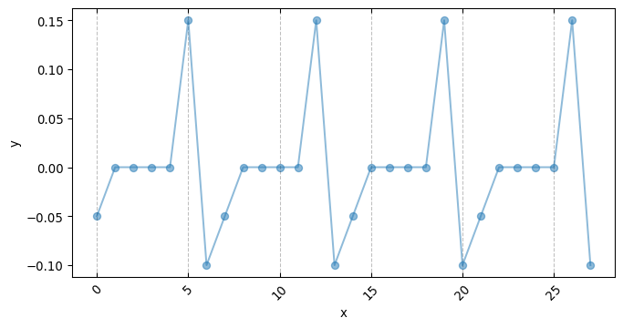
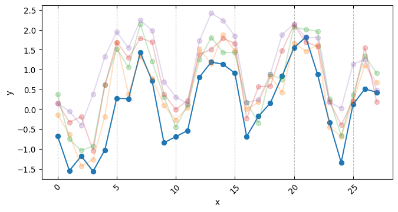
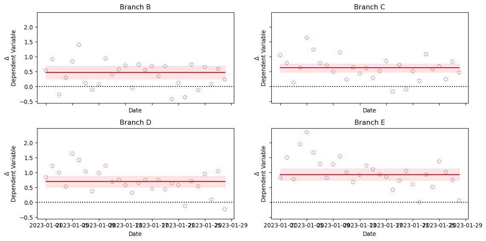

What will be illustrated in this post is strongly in spired by the content of the books “Statistical Rethinking” (McElreath 2018) and “Bayesian Data Analysis 3rd Edition” (Gelman et al. 1995). In particular, the idea to separately code and illustrate the behavior of different covariance kernel functions comes from the amazing “Kernel Cookbook” and PhD thesis of David Duvenaud (Duvenaud 2014).
This post assumes some level of knowledge in bayesian statistics and probabilistic programming.
1.1 What we will cover
Very brief illustration of longitudinal A/B test within and observational paradigm.
Very brief illustration of gaussian processes and their application to analyzing A/B test data.
Overview of how to implement a gaussian process model using Numpyro and JAX.
Simulating A/B test data.
Analyzing A/B test data within an modelling setting.
1.2 What we will not cover
Detailed coverage of A/B test (e.g., sampling, randomization etc…).
Hypothesis testing (we will focus on modelling).
Fundamentals of bayesian statistics.
Detailed overview of Gaussian processes.
Probabilistic programming and sampling algorithms.
2 Introduction
2.1 Longitudinal A/B tests in observational settings
When we talk about A/B test we usually refer to a research method used for evaluating if a given intervention is having an impact on a pre-defined outcome variable measured inside a sample. For doing so, we can draw two distinct samples (the A and B group) from a population of interest, subject one of the two to the intervention and then measure observed differences in the outcome variable. Subject to several assumptions and pre-conditions (we suggest reading part V of “Regression and Other Stories” (Gelman, Hill, and Vehtari 2021)), if we observe a difference between the two groups when can conclude that our intervention might have had an impact on our outcome variable.
2.2 Gaussian Process
The Gaussian Process \(GP\) can be thought as the continuous generalization of basis function regression (see Chapter 20 of (Gelman et al. 1995)). We can think of it as a stochastic process where any point drawn from it, \(x_1, \dots, x_n\), comes from a multi-dimensional gaussian. In other words, it is as a prior distribution over an un-known function \(\mu(x)\) defined as
where \(m\) is a mean function and \(k\) is a covariance function. We can already have an intuition of how defining the \(GP\) in terms mean and covariance functions gives us quite some flexibility as it allows us to produce a model than can interpolate for all the value of \(x\).
The \(m\) function provides the most likely guess for the \(GP\) like the mean vector of a multi-dimensional Gaussian, deviation from this expected model are then handled by the covariance function \(k\).
The \(k\) function (often called Kernel) allows to structurally define the \(GP\) behavior at any two points by producing an \(n \times n\) covariance function given by evaluating \(k(x, x')\) for every \(x_1, \dots, x_n\).
One convenient property of \(GP\) is that the sum and multiplication of two or more \(GP\) is itself a \(GP\), this allows to combine different types of Kernels for imposing specific structural constrains.
2.3 Gaussian Process for A/B test
Although we were not able to find many papers illustrating how \(GP\) can be used for analyzing A/B test data we found this interesting work by (Benavoli and Mangili 2015) from IDSIA that we decided to adapt to our use-case.
3 Implementing a Gaussian Process Model in Numpyro
In this section we will illustrate how we can implement a \(GP\) model using Numpyro. Numpyro offers a Numpy-like Backend for Pyro a Probabilistic Programming Language (PPL). Other than offering the flexibility of specifying models using the familiar Numpy interface, Numpyro is perfectly integrated with JAX allowing us to tap into its JIT compilation capabilities.
BLUE = (0, 83, 159)BLUE =tuple(value /255.for value in BLUE)RED = (238, 28, 46)RED =tuple(value /255.for value in RED)# seeded generator so that the simulated data is the same at every executionRNG = np.random.default_rng(666)TIME_IDX = np.arange(7*4)DATES = pd.date_range( start="01-01-2023", periods=len(TIME_IDX)).valuesTIME ="date"MODELS = ["Branch A","Branch B","Branch C","Branch D","Branch E",]
3.1 Kernel Functions
implementing Kernel functions in Numpyro is as easy as simply writing the functional form of the actual covariance function in pure python. It is sufficient that the python function has the following signature:
Here X and X_prime is the same input covariate used for creating the covariance matrix. While the keyword arguments are the parameters used for computing the pairwise relationship between each pair of of values in X (hence why we duplicate it using X_prime). This is the base for giving structure and creating our covariance matrix. We will now present a series of conventional covariance functions usually found in standard Gaussian Process applications.
# one value per day of the week, from Monday to Sundayweekday_effect = np.array( [0.,0.,0.,0.,0.15,-0.1,-0.05 ])# index by the actual day of the week of each date (2023-01-01 is a Sunday)weekday_effect = weekday_effect[pd.DatetimeIndex(DATES).dayofweek]fig, ax = plt.subplots(1, 1, figsize=(8, 4))ax = plot_univariate_series( series_data={"x": {"data": TIME_IDX,"label": "x" },"y": {"data": np.ones(shape=(TIME_IDX.shape[0])) * weekday_effect,"label": "y" }, }, ax=ax, alpha=0.5)plt.show()

# additive weekday effects, the same structure assumed by the model belowsimulated_series = sampled_functions_underlying + weekday_effectfig, ax = plt.subplots(1, 1, figsize=(8, 4))for idx, series inenumerate(range(simulated_series.shape[0])): ax = plot_univariate_series( series_data={"x": {"data": TIME_IDX,"label": "x" },"y": {"data": simulated_series[series, :],"label": "y" }, }, ax=ax, alpha=0.25if idx !=0else1. )plt.show()

5 Fitting Gaussian Process Models to A/B test data
df = pd.DataFrame( simulated_series.T,# the names here indicates the 5 branches of an AB test. columns=MODELS)df["date"] = DATESdf["day_week"] = df["date"].dt.day_name()df.head()
arms = MODELS.copy()arms.remove("Branch A")fig, axs = plt.subplots( nrows=2, ncols=2, figsize=(12, 6), sharex=True, sharey=True)for arm_b, ax inzip(arms, axs.flatten()): delta = df[arm_b] - df["Branch A"] time = df[TIME]# standard error of the median: sqrt(pi / 2) * sigma / sqrt(n), with sigma# estimated robustly from the median absolute deviation semed = np.sqrt(np.pi /2) * median_abs_deviation(delta, scale="normal") / np.sqrt(len(time)) ax.scatter( time, delta, marker="o", facecolors='none', edgecolors='r', linestyle=":" ) ax.set_title(arm_b) ax.plot( time, [np.median(delta)] *len(time), c='r', ) ax.fill_between( time, [np.median(delta) - (1.96* semed)] *len(time), [np.median(delta) + (1.96* semed)] *len(time), color='r', alpha=0.1 ) ax.axhline(0, linestyle=":", c="k" ) ax.set_xlabel("Date") ax.set_ylabel("$\\Delta$\nDependent Variable")plt.tight_layout()plt.show()

5.1 The Gaussian Process Model
Rather than fitting a separate model to each arm and subtracting the results, we fit a single model to all the arms at once. All arms share the same baseline \(b(t)\), made of an intercept, a smooth trend drawn from a \(GP\) with an RBF kernel and day-of-the-week effects. Each treatment arm \(j\) then adds its own effect \(\delta_j(t)\), which starts at \(\delta_{j,0}\) and decays exponentially at rate \(r_j\), while the control arm (Branch A) has no effect by construction:
Because the baseline is shared, everything that affects all the arms in the same way (trend, seasonality, weekday effects) is absorbed by \(b(t)\) and the difference between a treatment arm and the control is exactly \(\delta_j(t)\), a parameter of the model rather than something reconstructed after the fact. As the data are daily, a periodic kernel with a period of 7 days is equivalent to the day-of-the-week effects \(\gamma\), so we use only the latter. The weekday effects are constrained to sum to zero so that they do not compete with the intercept.
def joint_gaussian_process_model( intercept_dist, trend_kernel_variance_dist, trend_kernel_length_dist, coefficients_days_dist, effect_initial_dist, effect_decay_rate_dist, observation_noise_dist, jitter=1e-4, ):def get_model(X, days, n_arms, y=None): n_times = X.shape[0]# shared baseline: intercept + latent trend GP. The GP is sampled in# its non-centred form, f = L @ z with z ~ N(0, 1) and L the cholesky# factor of the covariance, which is much easier for NUTS to explore intercept = numpyro.sample("intercept", intercept_dist) trend_kernel_variance = numpyro.sample("trend_kernel_variance", trend_kernel_variance_dist, ) trend_kernel_length = numpyro.sample("trend_kernel_length", trend_kernel_length_dist, ) covariance_matrix_trend = RBF_kernel( X=X, X_prime=X, variance=trend_kernel_variance, length=trend_kernel_length, noise=0., jitter=jitter, ) trend_z = numpyro.sample("trend_z", dist.Normal(0., 1.).expand([n_times]).to_event(1), ) trend = numpyro.deterministic("trend", jnp.linalg.cholesky(covariance_matrix_trend) @ trend_z, ) coefficients_days = numpyro.sample("coefficients_days", coefficients_days_dist, ) days_effect = numpyro.deterministic("days_effect", jnp.dot(days, coefficients_days), ) baseline = numpyro.deterministic("baseline", intercept + trend + days_effect, )# one exponentially decaying effect per treatment arm, the same# functional form used by exponential_decay_function for simulatingwith numpyro.plate("treatment_arms", n_arms -1): effect_initial = numpyro.sample("effect_initial", effect_initial_dist) effect_decay_rate = numpyro.sample("effect_decay_rate", effect_decay_rate_dist, ) treatment_effect = numpyro.deterministic("treatment_effect", effect_initial[:, None]* jnp.power(1- effect_decay_rate[:, None], jnp.arange(n_times)), )# the control arm (first row) has no effect by construction effect = jnp.concatenate([jnp.zeros((1, n_times)), treatment_effect], axis=0) mu = numpyro.deterministic("mu", baseline[None, :] + effect) observation_noise = numpyro.sample("observation_noise", observation_noise_dist, ) numpyro.sample("y", dist.Normal(mu, observation_noise).to_event(2), obs=y, )return get_model
All the arms are standardized using the mean and standard deviation of the control arm, so that the effects are expressed on a common scale.
from sklearn.preprocessing import OneHotEncodery_control = df["Branch A"].values.copy()y_models = { model_name: df[model_name].values.copy() for model_name in arms}( standardizing_mean, standardizing_std, y_control_standardized, y_models_standardized) = standardize_targets_to_common_statistics( reference_X=y_control, targets_X=y_models)# one row per arm, the control arm firstY = np.stack( [y_control_standardized] + [y_models_standardized[model_name] for model_name in arms])# number of days elapsed since the beginning of the AB testX = TIME_IDX.astype(np.float32)days = OneHotEncoder(sparse_output=False).fit_transform(df["day_week"].values.reshape(-1, 1))
Show supplementary code
from numpyro.diagnostics import summarydef summarize_posterior(mcmc, sites, prob=0.95):"""Convergence diagnostics and summary statistics for the selected sites.""" site_summaries = summary( {site: mcmc.get_samples(group_by_chain=True)[site] for site in sites}, prob=prob, ) rows = []for site, statistics in site_summaries.items():for index in np.ndindex(np.shape(statistics["mean"])): name =f"{site}[{', '.join(map(str, index))}]"if index else site rows.append({"parameter": name,**{ statistic: float(np.asarray(value)[index])for statistic, value in statistics.items() } })return pd.DataFrame(rows).set_index("parameter").round(3)
def sample_posterior(model, sampler_kernel_algo, rng_key, num_warmup, num_samples, num_chains, target_accept_prob=0.9, **model_kwargs):# We obtain the kernel used by the MCMC sampler sampler_kernel = sampler_kernel_algo(model, target_accept_prob=target_accept_prob) mcmc = MCMC( sampler_kernel, num_warmup=num_warmup, num_samples=num_samples, num_chains=num_chains, progress_bar=False, ) mcmc.run(rng_key, **model_kwargs)return mcmcget_model = joint_gaussian_process_model( intercept_dist=dist.Normal(0., 1.), trend_kernel_variance_dist=dist.HalfNormal(1.),# length scale in days, centred on a week trend_kernel_length_dist=dist.LogNormal(np.log(7.), 0.5), coefficients_days_dist=dist.ZeroSumNormal(0.5, event_shape=(days.shape[1],)), effect_initial_dist=dist.Normal(0., 1.), effect_decay_rate_dist=dist.Beta(1., 4.), observation_noise_dist=dist.HalfNormal(1.),)mcmc = sample_posterior( model=get_model, sampler_kernel_algo=NUTS, rng_key=random.PRNGKey(0), num_warmup=1000, num_samples=1000, num_chains=NUM_CHAINS, X=X, days=days, n_arms=Y.shape[0], y=Y,)posterior_samples = mcmc.get_samples()print(f"Number of divergences: {int(mcmc.get_extra_fields()['diverging'].sum())}")
As we simulated the data, we can check whether the model recovers the effects we injected, brought back to the original scale of the dependent variable. Over a 28 days window the initial effect and its decay rate are partly interchangeable (a smaller effect decaying slowly looks similar to a larger one decaying fast), so they are estimated less precisely than the average effect over the duration of the test. Keep also in mind that the simulated noise makes the effects realised in the data differ somewhat from the ones we designed.
# fitted mean of each arm on the original scale, shape (samples, arms, time)samples_mean = inverse_standardize( X=np.asarray(posterior_samples["mu"]), mean=standardizing_mean, std=standardizing_std)samples_mean_control = samples_mean[:, 0, :]samples_mean_models = {}samples_mean_differences = {}for arm_index, model_name inenumerate(arms): samples_mean_models[model_name] = samples_mean[:, arm_index +1, :]# differences only need rescaling, the standardizing mean cancels out samples_mean_differences[model_name] = ( np.asarray(posterior_samples["treatment_effect"][:, arm_index, :]) * standardizing_std )
Benavoli, Alessio, and Francesca Mangili. 2015. “Gaussian Processes for Bayesian Hypothesis Tests on Regression Functions.” In Artificial Intelligence and Statistics, 74–82. PMLR.
Duvenaud, David. 2014. “Automatic Model Construction with Gaussian Processes.” PhD thesis.
Gelman, Andrew, John B Carlin, Hal S Stern, and Donald B Rubin. 1995. Bayesian Data Analysis. Chapman; Hall/CRC.
Gelman, Andrew, Jennifer Hill, and Aki Vehtari. 2021. Regression and Other Stories. Cambridge University Press.
McElreath, Richard. 2018. Statistical Rethinking: A Bayesian Course with Examples in r and Stan. Chapman; Hall/CRC.